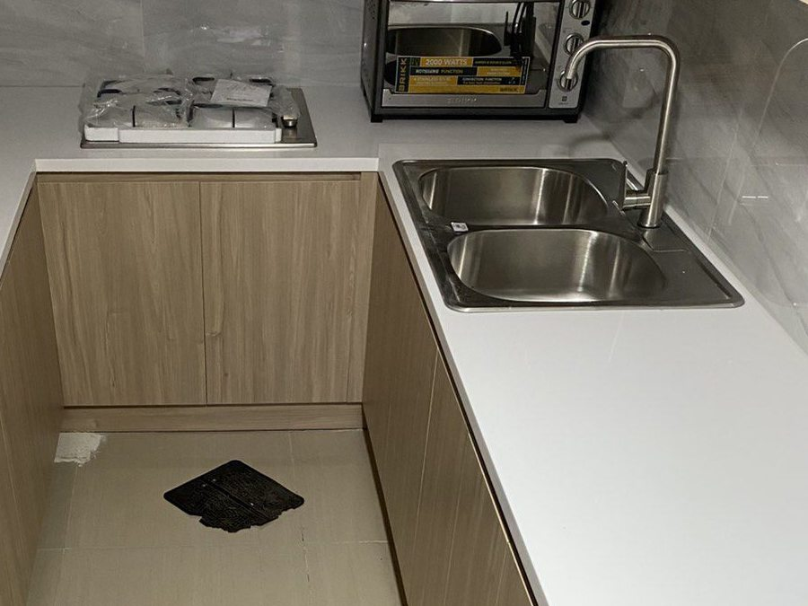
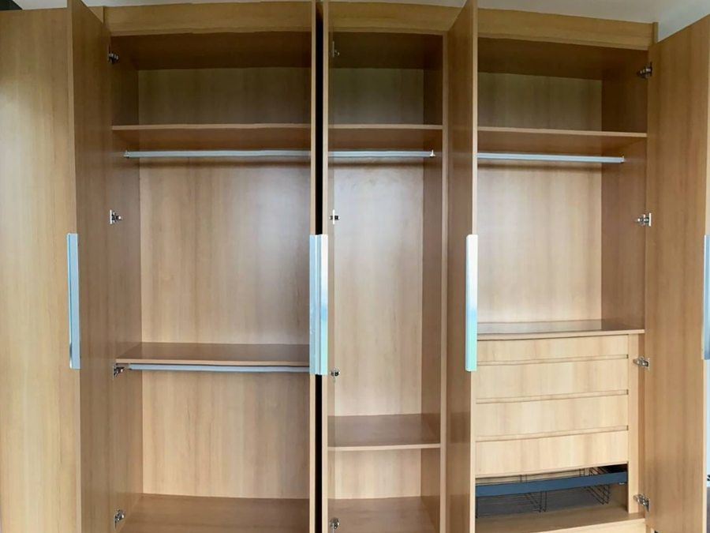
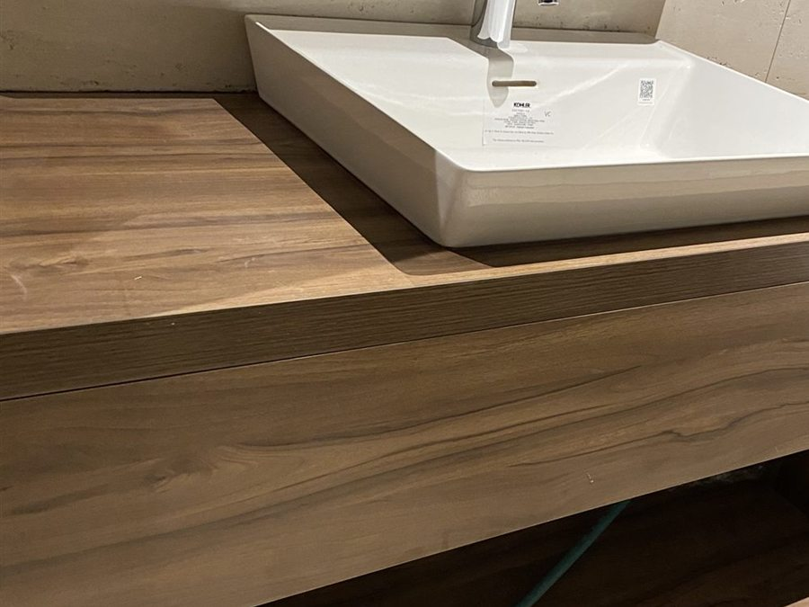
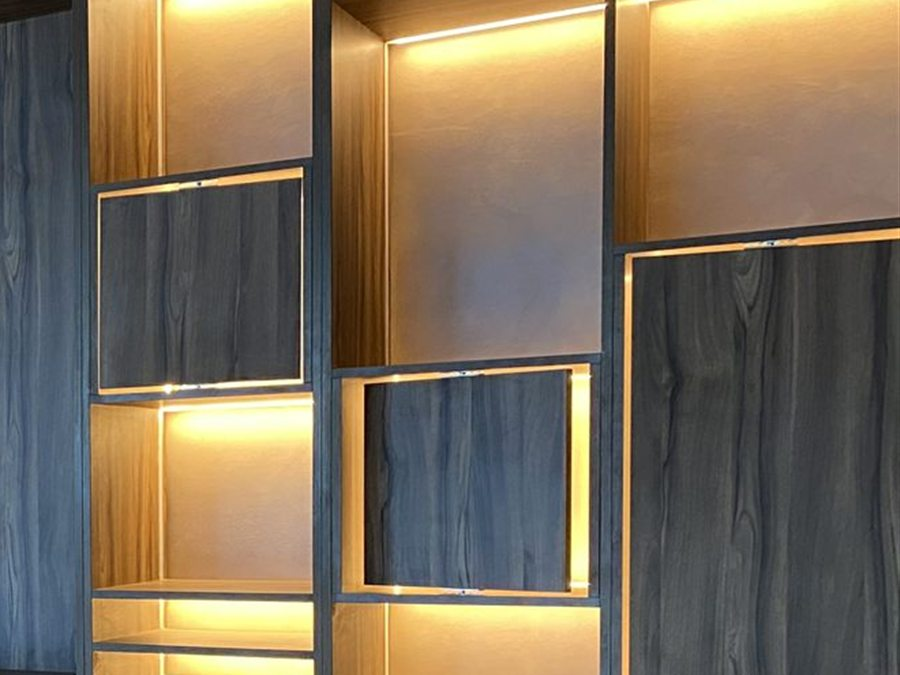
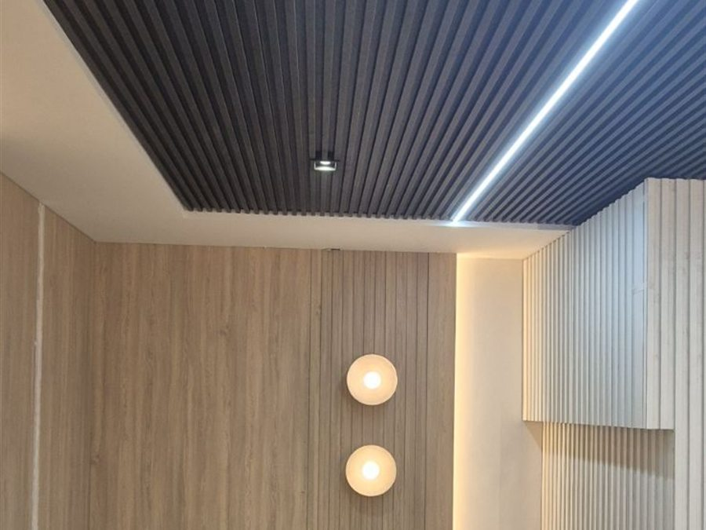
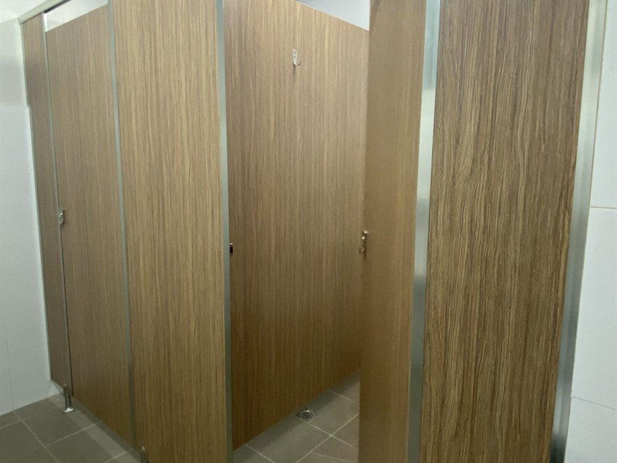
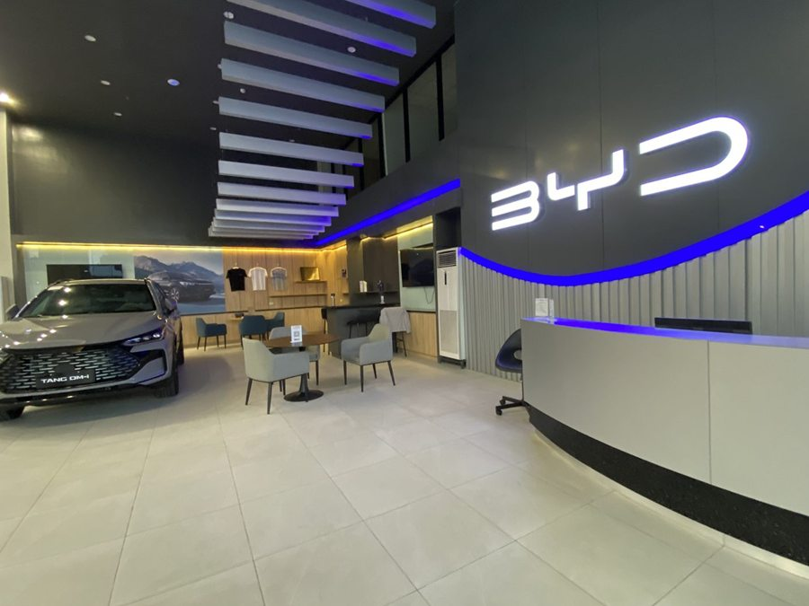
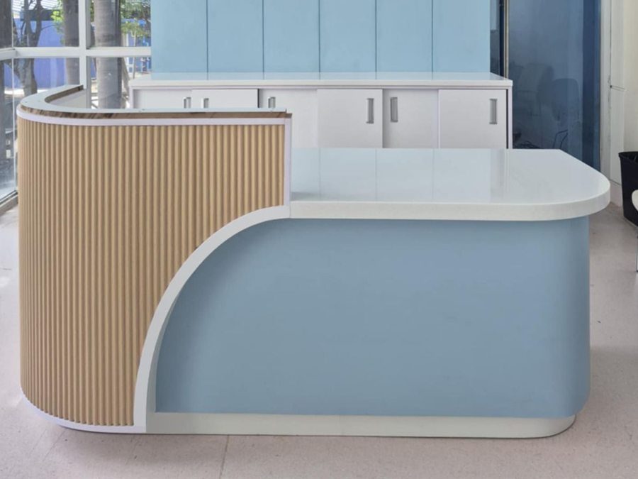

Kitchen
Base and wall runs, island, tall storage, counters and splashbacks.
Loading the room
This is a real room, photographed at every stage. Same camera, same corner — only we happened in between.
Eight kinds of work, built on one module system and fitted by the same crew that made them. Every photograph is our own work.

Base and wall runs, island, tall storage, counters and splashbacks.

Hanging, shelving, drawer islands, mirrors and integrated lighting.

Moisture-resistant carcasses, stone tops, basin cut-outs, tall units.

Desk runs, casework, open shelving, reception counters.

HPL panels on a plywood base, aluminium edge trim, scribed to the room.

12 mm compact laminate, stainless pilasters and hinges, indicator locks.

Reception desks, display counters and back-of-house casework — car and retail.

Worktops, splashbacks and doors supplied on their own, not only as part of a run.
Six processes under one roof in Pasig. Nothing is handed to a broker, which is why there is nobody else to point at when something needs putting right.
4×8 and 6×8 boards · MDF · particleboard · plywood · compact laminate · acrylic · Versaboard
Nested to the standard module, so less of the board ends up as offcut.
EVA and transparent EVA · panels up to 50 mm thick · manual banding for curved work
Banded to a code that travels with the panel, so the finish is specified rather than assumed.
3 mm in melamine and compact laminate · router grooving · sliding-door track · handgrab and flush-handle
Cut to depth on the machine that suits the board, not forced through one setting.
5 · 8 · 10 · 15 · 35 · 59 mm — shelf pegs, gliders, Minifix, hinge cups, grommets, drawer locks
The same schedule every run, so parts from different batches still line up.
Finger-pull and handgrab profiles · special-cut shapes
Machined before assembly, never improvised on site.
One or two face · laid by hand on every substrate · whole 4×8 sheet or by component
Hand-laid, the traditional way. Slower than a press, and it lasts a lifetime.
Already have a cutting list? Send it and we’ll price it →
The factory is only half of it. Installation is done by people on our payroll — not a subcontractor hired for the week — and that is the only reason we can promise to come back when something needs putting right. The person who fitted it is the person who answers for it.
Furniture and casework · toilet partitions · wall cladding · counters · flush doors
Metro Manila and provincial sites · scribed to walls that are not square
Drag to pan, ctrl+scroll to zoom. The white tower is the factory; the arcs are the deliveries that got the work there. Locations shown, not clients.
Every installation has a door that drops or a drawer that sticks eventually. The difference is not whether it happens — it is whether anyone answers. Coming back costs money, and it is the first thing to go when the price is cut to win the job.
At handover you are given the name and mobile of the person responsible for your project. Not a general enquiry line, not a web form.
During working hours. A call starts it. We ask for a short note describing the fault and where it is, so the claim is on record.
We talk it through, and if you are free in that window we come and see it ourselves — our own crew, the people who installed it.
Once assessed. Not logged, not scheduled — done, and confirmed with you. If a claim is not covered we tell you that too, and why.
Six months from the day your Certificate of Completion is signed — manufacturing defects and faulty workmanship, in the cabinets, countertops, accessories and the installation itself. We repair or replace at our cost. If a finish or model has since been discontinued, we fit an equivalent or better one rather than leaving you with a gap.
Everyday wear and tear · accidental damage or misuse · harsh or abrasive cleaning products · flooding, leaks, fire or termites · work altered or repaired by someone else · movement or settlement of the building · natural variation in grain, colour and texture. That last one is normal in real timber and laminate, not a defect — we would rather say so now than argue about it later.
Summary only. The signed warranty in your contract is what governs, including how liability is limited. Ask for it before you sign — and ask our competitors for theirs.
Something needs putting right? +63 898 600 6926 or aftercare-mssi@worldclasslaminate.com.ph. If you have already had a handover, call the person named on it first — they know the job.
Boards, solid surface and quartz — chosen before the cabinet is drawn, named on the quotation, and matched against a sample you have held. Every colour below is one you can order today.
Eight of the fifty-one Elemental colours and ten of the German Series, sampled from World Class Laminate’s own product photography — see the full Elemental HPL and German Series listings. Beyond these there are the Supermatte, Italian, Rehau and Dé One ranges, Melamine Plywood and Triplestar MDF.
Acrylic through its whole thickness, so it is non-porous and joins without a visible seam — a long run of counter reads as one piece. It bends around a curve, and a scratch or a scorch sands out instead of being lived with. Eight here, from three of the six series — Whites, Marble, Munich, Berlin, Frankfurt and Hannover.
Harder than anything it sits on: stain and scratch resistant, and non-porous, so it never needs sealing — no yearly re-seal, and no ring left behind by a glass. Three of the range shown.
Who fits the stone. Solid surface and quartz tops are templated and installed by the stone specialist. They can be bought through your MSSI quotation or contracted direct — either way our part is what goes underneath: carcass built to the template, cut for the basin, and rated to carry the slab, so the fitter arrives to something square.
Ask us for hand samples with your quotation — a chip on a screen is not a decision.